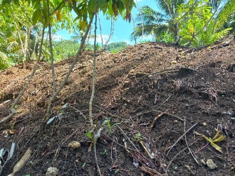
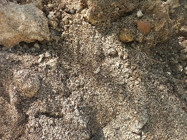
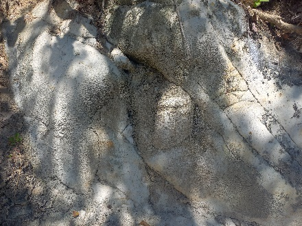
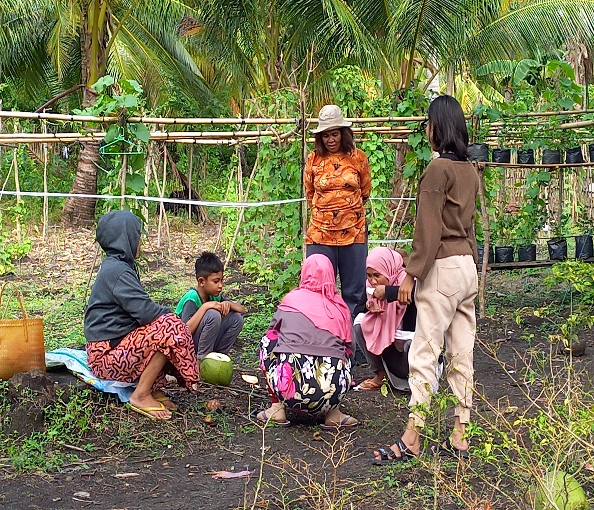
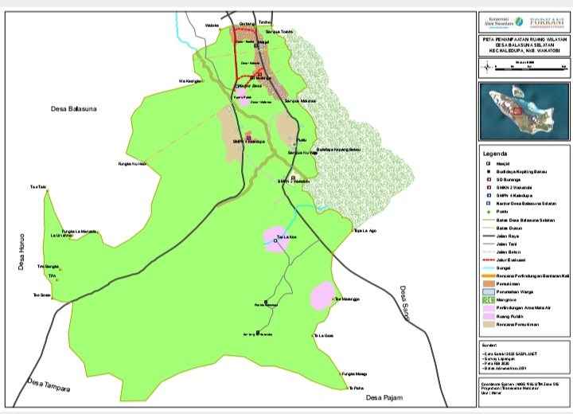
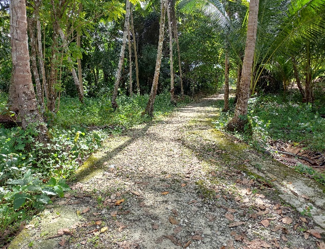
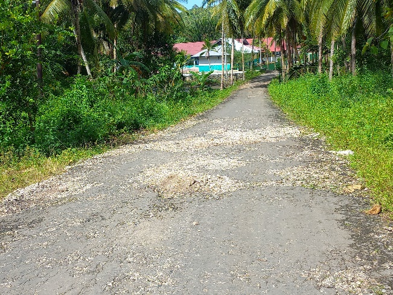
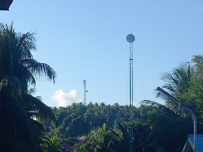

Wilayah Desa
Geografi, Ekosistem & Prasarana
Desa pesisir dan perbukitan di ujung selatan Kecamatan Kaledupa — 282 hektare tutupan lahan, ekosistem mangrove dan hutan hak, serta jaringan prasarana desa.
Desa pesisir dan perbukitan di ujung selatan Kecamatan Kaledupa — 282 hektare tutupan lahan, ekosistem mangrove dan hutan hak, serta jaringan prasarana desa.
Terletak di wilayah paling selatan Kecamatan Kaledupa, berbatasan langsung dengan Kecamatan Kaledupa Selatan.
Desa Balasuna
Desa Sandi, Desa Pajam & Desa Tampara (Kec. Kaledupa Selatan)
Desa Horuo
Hutan mangrove pesisir Desa Balasuna Selatan
Wilayah berupa perbukitan, sebagian dataran rendah dan pesisir pantai. Jarak ke Ambeua (ibu kota kecamatan) hanya 6 km melalui jalur darat, sedangkan ibu kota kabupaten hanya dapat ditempuh melalui jalur laut.
Garis tapal batas desa adalah hasil penelusuran tim pemetaan 2022 (BPD, pemerintah desa, Sara Barata Kahedupa, desa tetangga dan pemilik lahan), didukung FORKANI & YKAN melalui program Desa Sigap 2022–2023.
Hasil pemetaan partisipatif desa, tahun 2022
Secara umum berupa daerah perbukitan, sebagian dataran rendah dan daerah pesisir pantai.
Tanah terbentuk dari endapan hasil pelapukan selama ribuan tahun. Secara tradisional masyarakat mengenal tiga jenis tanah (futa):



Hutan hak di selatan dan barat desa serta hutan lindung mangrove di pesisir menjadi cadangan sumber mata air yang berlimpah.
| No | Nama | Dusun | Jumlah |
|---|---|---|---|
| 1. | Te'e La Ganda | Kakado | 1 |
| 2. | Te'e Mambulo | Mokora | 1 |
| 3. | Te'e La Koe | Mokora | 1 |
| 4. | Te'e La Bukaa | Mokora | 1 |
| 5. | Te'e Topa Lago | Mokora | 1 |
| 6. | Te'e Maranggo | Mokora | 1 |
| 7. | Te'e Bangka | Mokora | 1 |
| No | Nama | Dusun | Jumlah |
|---|---|---|---|
| 1. | Sumur bor dikelola Mujiarin, lahan keluarga besar Suwandi, S.Sos (La Bula) | Kakado | 1 |
| 2. | Sumur bor milik Desa Waduri di lahan milik Mujiarin | Toroho | 1 |
| 3. | Sumur bor Te'e Laganda | Kakado | 1 |
| 4. | Sumur bor Dinas Pertanian di lahan milik Adil | Kakado | 1 |
| 5. | Sumur bor SMP Negeri 4 Kaledupa | Kakado | 1 |
| 6. | Sumur bor Dinas Pertanian di lahan La Haridi (Te'e Kau bui) | Mokora | 1 |
| 7. | Sumur bor Dinas Pertanian di lahan Muhadi (La Pudu) | Mokora | 1 |
| 8. | Sumur bor Dinas Pertanian di lahan La Sinafi (di Lapudu) | Mokora | 1 |

Sumber mata air desa
Dimanfaatkan untuk pertanian, air baku rumah tangga hingga pasokan desa lain di Pulau Kaledupa.
Desa belum memiliki aturan pengelolaan sumber mata air (sumur), sehingga penjual air mengambil secara gratis.
Hutan hak (bagian selatan) menjadi daerah resapan air dan sumber pangan lokal/perabot: rumbia, bambu, mangga, nangka, asam, kenari, longkida, asana, jati.
Hutan lindung mangrove di pesisir dimanfaatkan untuk ekowisata, pembesaran dan penangkapan kepiting bakau, siput serta kalantue (bivalvia).
Pemukiman terpusat di kiri-kanan jalan poros Balasuna–Sandi. Pada 2022 melalui Program Sigap, masyarakat bersama pemerintah desa menyusun konsep penataan pemanfaatan ruang wilayah desa.
Penguasaan dan kepemilikan lahan juga dimiliki masyarakat luar desa: Desa Balasuna, Waduri, Buranga dan desa lainnya.

Jalan kabupaten, jalan desa rabat beton, air perpipan, listrik, menara telekomunikasi dan fasilitas pelayanan dasar masyarakat.
Tiga ruas jalan kabupaten aspal melewati desa; di dalam kawasan pemukiman hingga pertanian tersedia jalan desa berupa rabat beton, jalan kampung dan jalan usaha tani yang menghubungkan antar dusun dan pangkalan perahu.
| Nama Jalan | Status | Keadaan |
|---|---|---|
| Balasuna Selatan – Balasuna | Jalan Kabupaten | Aspal, sebagian rusak |
| Balasuna Selatan – Sandi | Jalan Kabupaten | Aspal, sebagian rusak |
| Balasuna Selatan – Tampara | Jalan Kabupaten | Aspal, tidak terawat, rusak berat |


Daratan umumnya memakai ojek dan mobil pick up, sebagian warga menyewakan sedan. Untuk jalur laut masyarakat memakai sampan atau katinting.
Terpenuhi dengan air perpipan bersumber dari sumur bor desa dan sumur bor La Unji.
Tersedia sejak 1997 dengan rata-rata 900 Watt per rumah. Menyala 16.00–06.00 WITA dan siang hari pada Jumat, Minggu serta hari besar pukul 10.00–14.00 WITA; sekitar 3 rumah tangga belum teraliri.
Sejak 2022 menara di Desa Waduri menjangkau seluruh Buranga Besar termasuk desa ini; hampir semua warga kini memiliki telepon seluler.
| No | Prasarana / Sarana | Jumlah | Keadaan |
|---|---|---|---|
| 1 | Kantor / Balai Desa | 1 | Masih berfungsi, terawat |
| 2 | Kantor BPD / Aula | 1 | Masih berfungsi, terawat |
| 3 | Mesjid desa | 2 | Masih berfungsi, terawat |
| 4 | Gedung Serba Guna | 1 | Masih berfungsi, terawat |
| 5 | Pustu | 1 | Tidak berfungsi, kurang terawat |
| 6 | Gedung PAUD | 1 | Masih berfungsi, terawat |
| 7 | Gedung TK | 1 | Masih berfungsi, terawat |
| 8 | Gedung SMP | 1 | Masih berfungsi, terawat |
| 9 | Gedung SMA/SMK | 1 | Masih berfungsi, terawat |
| 10 | Pos Ronda | 2 | Berfungsi, tidak terawat |

Data prasarana dan sarana pelayanan umum hingga awal tahun 2018; pustu tidak berfungsi dan pos ronda kurang terawat.